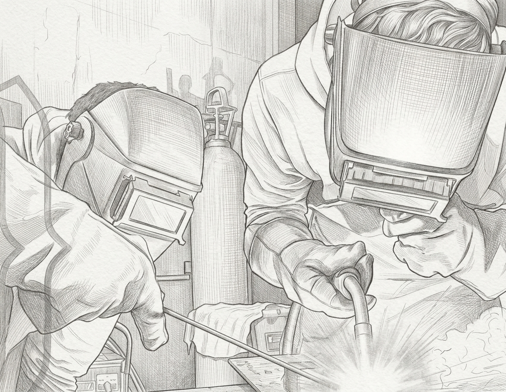

Trayectos formativos
Permiten al alumno estructurar y profundizar su formación a través de una secuencia de cursos.
Conocé nuestros trayectos formativosCursos y programas orientados a fortalecer capacidades en los actuales y futuros trabajadores. Aprendizaje y perfeccionamiento de un oficio o profesión.



ITEC El Molino es institución certificada por referencial IRAM – MTEYSS.
Permiten al alumno estructurar y profundizar su formación a través de una secuencia de cursos.
Conocé nuestros trayectos formativosCursos de formación profesional para el desarrollo de competencias laborales.
Ver cursosPermiten al alumno estructurar y profundizar su formación a través de una secuencia de cursos.
Mostrar cursos:
Cursos de formación profesional para el desarrollo de competencias laborales.
Las inscripciones se abren cuando se publican nuevas propuestas. Dejanos tus datos y te avisamos, o conocé los cursos que forman parte de cada trayecto.
Ver trayectos formativos